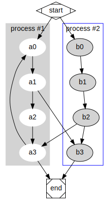

Example
Breakline
Cette premère phrase est sans breakline.
Cette deuxième phrase contient un double espace
qui fait une break line.
Emphasis
I just love bold text.
I just love italic text.
Citation
Rendez les choses aussi simples que possible, mais pas plus simples.
Albert Einstein
Admodition
Note
Here is *admonition* directive using MyST specification.
!!! danger “danger” Here is admonition directive using mkdocs-material specification.
tips alert
success alert
warning alert
danger alert
[!NOTE] Highlights information that users should take into account, even when skimming.
[!TIP] Optional information to help a user be more successful.
[!IMPORTANT] Crucial information necessary for users to succeed.
[!WARNING] Critical content demanding immediate user attention due to potential risks.
[!CAUTION] Negative potential consequences of an action.
List
introduction
theme
argument 1
argument 2
argument 3
arg3.1
arg3.2
antithese
synthese
conclusion
cas1
cas2
ex2.1
ex2.2
cas3
Math
La somme des n premiers entiers naturels est \(\sum_{i=1}^n = \frac{n(n+1)}{2}\)
Image
Example de graph avec dot de graphviz

Link
code
exemple d’usage de la commande mkdir :
%SYSTEMDRIVE%
cd %USERPROFILE%
dir dummy
mkdir dummy
dir dummy
rmdir dummy
dir dummy
Microsoft Windows [version 10.0.19045.5247]
(c) Microsoft Corporation. Tous droits réservés.
C:\Users\jeanf>%SYSTEMDRIVE%
C:\Users\jeanf>cd %USERPROFILE%
C:\Users\jeanf>dir dummy
Le volume dans le lecteur C s’appelle Windows
Le numéro de série du volume est A0ED-B83C
Répertoire de C:\Users\jeanf\dummy
28/07/2024 11:31 <DIR> .
28/07/2024 11:31 <DIR> ..
0 fichier(s) 0 octets
2 Rép(s) 530 155 786 240 octets libres
C:\Users\jeanf>mkdir dummy
Un sous-répertoire ou un fichier dummy existe déjà.
C:\Users\jeanf>dir dummy
Le volume dans le lecteur C s’appelle Windows
Le numéro de série du volume est A0ED-B83C
Répertoire de C:\Users\jeanf\dummy
28/07/2024 11:31 <DIR> .
28/07/2024 11:31 <DIR> ..
0 fichier(s) 0 octets
2 Rép(s) 530 155 786 240 octets libres
C:\Users\jeanf>rmdir dummy
Le répertoire n’est pas vide.
C:\Users\jeanf>dir dummy
Le volume dans le lecteur C s’appelle Windows
Le numéro de série du volume est A0ED-B83C
Répertoire de C:\Users\jeanf\dummy
28/07/2024 11:31 <DIR> .
28/07/2024 11:31 <DIR> ..
0 fichier(s) 0 octets
2 Rép(s) 530 155 786 240 octets libres
C:\Users\jeanf>
Mermaid
graph TD;
A-->B;
A-->C;
B-->D;
C-->D;
Graphviz
![digraph foo {
// sphinx_rtd_dark_mode
bgcolor="#141414"
node[fontcolor="#c1c1c1",style=filled,color="#c1c1c1",fillcolor="#141414"]
edge[color="#c1c1c1",fontcolor="#c1c1c1"]
// sphinx_rtd_dark_mode
A -> B
}](../_images/graphviz-ec7a64316efe55dc47d4a58aa75077d51c2c8797.png)